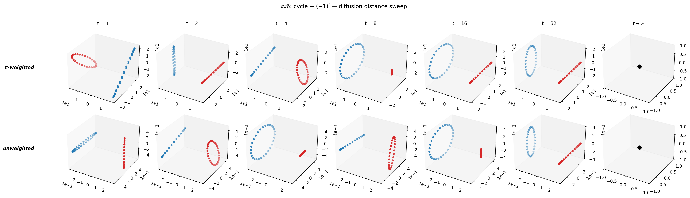
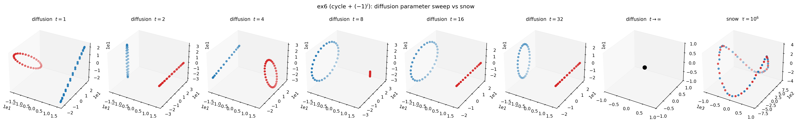
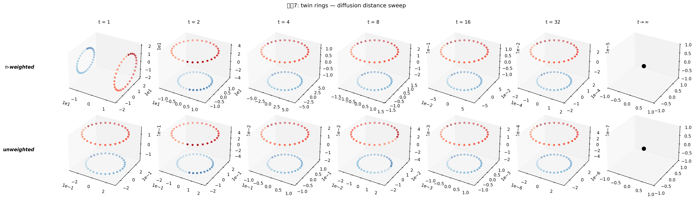

연구 ▷ HST ▷ Diffusion distance vs Snow distance
0. 동기
선형결합 밖 embedding 에서 \(D^{G,\mathrm{diff}}\) 를 HST 의 \(D^{\mathrm{HST}}\) 와 비교하는 기준으로 자주 썼다. 이때 드러난 질문들:
- Diffusion distance 의 엄밀한 정의는? pyhst 의 기존 구현이 맞는가?
- Diffusion 은 \(t\) 파라미터, snow 는 \(\tau\) 파라미터 — 둘은 같은 종류의 것인가?
- \(t \to \infty\), \(\tau \to \infty\) 에서 각각 어떻게 거동하는가?
- heterogeneous degree 그래프 (예제7 twin rings) 에서 diffusion 이 왜 물리적 scale 을 왜곡했는가?
- 방향성 있는 그래프 (예제8 directed cycle) 에서 diffusion 은 왜 붕괴하는가?
본 포스트는 두 distance 를 정의·파라미터·정보·극한 네 관점에서 나란히 정리한다.
1. Diffusion distance — 정통 정의 (Coifman–Lafon 2006)
1.1 Setup
그래프 \(\mathcal{G} = (V, W)\), \(W \in \mathbb{R}_{\ge 0}^{n \times n}\) (대칭 또는 비대칭 허용).
Row-stochastic transition matrix:
\[P = D_{\mathrm{out}}^{-1} W, \qquad D_{\mathrm{out}} = \mathrm{diag}\!\left(\sum_j W_{ij}\right), \qquad P \mathbf{1} = \mathbf{1}.\]
Stationary distribution \(\pi \in \Delta^{n-1}\):
\[\pi^\top P = \pi^\top, \qquad \pi_i > 0 \text{ (irreducible aperiodic 가정)}.\]
대칭 \(W = W^\top\) 인 경우 \(\pi_i = d_i / \sum_k d_k\) (reversible Markov).
1.2 정통 정의
\[\boxed{\; D_t^2(i, j) \;:=\; \sum_k \frac{\big(P^t_{ik} - P^t_{jk}\big)^2}{\pi_k} \;=\; \big\| P^t_i - P^t_j \big\|^2_{L^2(1/\pi)} \;}\]
Spectral form (reversible 경우, \(P = \Psi \Lambda \Phi^\top\), \(\lambda_0 = 1 > \lambda_1 \ge \cdots\)):
\[D_t^2(i, j) = \sum_{\ell \ge 1} \lambda_\ell^{2t} \big(\psi_\ell(i) - \psi_\ell(j)\big)^2.\]
- trivial mode \(\lambda_0 = 1\) 의 상수 eigenvector 는 모든 노드에서 같으므로 기여 0 → 자동 제외.
- \(|\lambda_\ell| < 1\) 이므로 \(t\) 증가 시 각 항이 \(\lambda_\ell^{2t}\) 로 지수 감쇠. 큰 \(t\) 에서 고주파 모드가 먼저 죽고 저주파 (= 큰 cluster scale) 만 남음.
1.3 \(\pi\)-가중 vs 비가중
두 변종:
- \(\pi\)-가중 (정통): \(\sum_k (P^t_{ik} - P^t_{jk})^2 / \pi_k\). \(P\) 의 spectral 분해와 직교성 유지.
- 비가중 (plain \(\ell^2\)): \(\sum_k (P^t_{ik} - P^t_{jk})^2\). 계산은 간단하지만 \(\pi\) heterogeneous 할 때 \(P^t\) 행 norm 이 편향되어 scale 왜곡.
homogeneous graph (\(\pi_k = 1/n\) 상수) 에서는 두 버전이 상수배 차이. heterogeneous 에서는 질적으로 다름 (선형결합 밖 embedding §5.2 예제7 twin rings 에서 극적으로 드러남).
1.4 Limit 거동
| \(t\) | \(P^t\) | \(D_t^2\) |
|---|---|---|
| \(t = 0\) | \(I\) | \((1/\pi_i + 1/\pi_j) - 2\cdot 0 = 1/\pi_i + 1/\pi_j\) (indicator pair) |
| small \(t\) | 거의 \(I\) + first-order mixing | local 이웃 구조 |
| moderate \(t\) | 고주파 모드 감쇠 시작 | global cluster 구조 드러남 |
| \(t \to \infty\) | \(\mathbf{1}\pi^\top\) (rank-1) | \(\to 0\) degenerate |
핵심: \(D_t\) 는 유한한 (\(t\) 의존) 최적 영역을 갖고, \(t\) 가 너무 크면 정보가 모두 소실. “스케일 파라미터” 성격.
1.5 pyhst 구현
원본 2022 노트북은 scalar normalize + plain \(\ell^2\) 의 heuristic 이었으나, 본 연구 과정에서 정통 Coifman–Lafon (\(D^{-1} W\) row-stochastic + stationary \(\pi\) power-iteration + \(\pi\)-가중/비가중 옵션) 으로 수정되었다. pyhst/distances.py 참고.
2. Snow distance — HST ergodic accumulation
2.1 Snow dynamics
HST 논문 기호정리 에서 정리한 바:
- Walker \(\{X_\ell\}\), 초기 \(X_0 \sim \mathrm{initdist}\), 전이 \(X_\ell \sim P\).
- Snow ground \(h_v(\ell) \in \mathbb{R}\): 노드 \(v\) 에 쌓인 누적 신호.
- 초기 \(h_v(0) = f_v\) (신호).
- 매 \(\ell\) 에서 flow (walker 가 downhill 로 이동) 이면 도착 노드에 \(+b\) 적재, 그 외는 block/reset 규칙 (drift condition 하에서 ergodic).
2.2 Snow distance 정의
\[\boxed{\; \overline{SD}^2_{ij}(\tau) \;:=\; \frac{1}{\tau} \sum_{\ell = 1}^\tau \big(h_i(\ell) - h_j(\ell)\big)^2 \;}\]
즉 시각 \(0\) 부터 \(\tau\) 까지의 snow ground 시간 sequence \(\{h_v(\ell)\}\) 의 평균 제곱 차. 각 노드의 “snow 높이 궤적” 을 함수로 보고 둘 사이의 \(L^2\) 거리의 시간 평균.
2.3 Limit 거동
Drift condition (DC) 하에서 Harris 극한:
\[c_{ij} = \lim_{\tau \to \infty} \overline{SD}^2_{ij}(\tau) = \mathbb{E}_\pi\big[\big(\delta_i(X) - \delta_j(X)\big)^2\big] \cdot \text{(b·다변량 상수)}\]
(정확한 형태는 260407 Main Theorem 참고.)
| \(\tau\) | \(\overline{SD}^2_{ij}(\tau)\) |
|---|---|
| \(\tau = 0\) | \((f_i - f_j)^2 = D^E_{ij}\) (Euclidean) |
| small \(\tau\) | \(D^E\) 근처 |
| moderate \(\tau\) | \(D^E\) 와 \(D^G\) 사이 비가환 interpolation |
| \(\tau \to \infty\) | \(D^G_{ij}\) (비자명 Harris 극한) |
핵심: \(\tau \to \infty\) 에서 degenerate 하지 않고 의미있는 극한에 수렴. 이것이 diffusion 의 parameter 거동과 가장 큰 차이.
3. 파라미터 비교 — \(t\) vs \(\tau\)
| diffusion \(t\) | snow \(\tau\) | |
|---|---|---|
| 수학적 연산 | \(P^t\) (matrix power) | time average \(\frac{1}{\tau} \sum_{\ell=1}^\tau \cdots\) |
| 계산 | deterministic | stochastic (random walk 시뮬) |
| 신호 \(f\) 사용 | 무관 | 필수 (초기 ground) |
| \(= 0\) | indicator: \(1/\pi_i + 1/\pi_j\) | \(D^E\) |
| small → moderate | local → global 구조 | \(D^E\) 에서 이탈 시작 |
| \(\to \infty\) | \(\mathbf{0}\) (degenerate) | \(D^G\) (Harris 극한, 비자명) |
| 최적 \(^*\) | 문제 의존 (너무 크면 정보 소실) | \(\tau^*\) deviation 최대 (편차분석) |
| 정보 구조 | rank deflation (고주파 제거) | ergodic averaging |
두 파라미터는 “시간” 이라는 공통 어휘로 표현되지만:
- \(t\) 는 스케일 선택 — 어느 주파수까지 볼 것인가. 너무 크면 정보가 균일화되어 사라진다.
- \(\tau\) 는 추정 정밀도 — 얼마나 오래 걸어서 ergodic 평균을 채울 것인가. 클수록 좋다 (asymptotically exact).
4. 구조 비교 — 정보 내용
| diffusion | snow | |
|---|---|---|
| 신호 포함 | ✗ | ✓ |
| 방향성 (\(W \ne W^\top\)) | 대칭화 → 정보 소실 | random walk 에 자연 반영 |
| heterogeneous degree | weighting 선택 결정적 | 자동 |
| spectral interpretation | \(P\) 의 eigenmode 제거 | walker 의 hitting time 통계 |
| symmetry (distance 공리) | 대칭 강제 | stochastic, \(\tau \to \infty\) 에 대칭 |
5. 실증 — diffusion sweep
선형결합 밖 embedding §5 에서 수행한 sweep 을 재인용 (3개 예제, \(t \in \{1, 2, 4, 8, 16, 32\}\), \(\pi\)-가중/비가중).
5.1 예제6 — homogeneous cycle + \((-1)^i\)

- \(t\) 에 따라 구조 완전 뒤바뀜: \(t=1\) 두 parity 원 분리 → \(t=8\) 한 원 융합 → \(t=32\) 선형 붕괴.
- \(\pi\)-가중/비가중 차이 거의 없음 (homogeneous).
- diffusion 은 \(t\) hyperparameter 에 극도로 민감; 최적 \(t\) 없이 쓰면 임의 구조 보게 됨.
5.1.1 어떤 \(t\) 도 snow 를 모방하지 못한다
동일 \(W, f\) 에서 diffusion 의 여러 \(t\) 와 snow (\(\tau = 10^6\)) 를 한 줄에 놓고 비교:

코드: 260425_예제6_diffusion_param.py. Euclidean 은 뻔해서 제외. 관찰:
| \(t\) | diffusion shape |
|---|---|
| \(1\) | 한 parity = 원, 다른 parity = 선 (비대칭 transient) |
| \(2\) | 위 과도기가 뒤집힌 상태 |
| \(4\) | 두 원이 접근, 비대칭 여전 |
| \(8\) | 두 원이 원 하나로 융합 (color interleave) |
| \(16\) | 완전 융합된 원 |
| \(32\) | 선형 붕괴 시작 |
snow (\(\tau = 10^6\)) 는 두 parity class 가 각자 따로 곡선을 그리는 \(\mathbb{Z}_2\)-cover 형태. 이는 diffusion 의 어떤 \(t\) 단일 값과도 다르다:
- \(t=1, 2, 4\) 의 “한쪽 parity 는 선으로 짜부라진” 비대칭 transient 가 아님.
- \(t=8, 16\) 의 “두 parity 가 한 원 안에서 interleave” 하는 융합 상태도 아님.
- 두 parity 의 고유 구조가 각자 살아있으면서 서로 교차하는 형태 — rank-2 outer product 구조.
즉 diffusion 의 parameter 공간 전체에 걸쳐 snow 와 등가인 점이 없음. 이것이 선형결합 밖 embedding §1 의 “rank-2 sum 으로 복제 불가한 rank-2 product” 주장의 시각적 증거.
5.2 예제7 — twin rings (heterogeneous)

- \(\pi\)-가중 (위): 균형 잡힌 동심원.
- 비가중 (아래): outer ring scale 축소 artefact.
- heterogeneous 에선 weighting 선택이 본질적.
5.3 예제8 — directed cycle

- 모든 \(t\), 두 mode 에서 blob. shift matrix \(P^t\) 가 permutation 이라 모든 non-diagonal 쌍 거리 동일 → diffusion 은 방향성 정보에 원천 접근 불가.
- Snow distance 는 동일 setup 에서 깨끗한 U-curve 생성 (선형결합 밖 embedding §3).
6. 결론
두 distance 는 다른 종류의 정보를 담는다.
- Diffusion: 그래프의 smoothing kernel. 신호와 무관. scale 파라미터 \(t\) 의 조정 필요. \(t\) 무한대에서 degenerate. 대칭 graph 에 적합.
- Snow: 공간 × 신호 × 시간의 비가환 convolution. 신호 사용. \(\tau\) 무한대에서 비자명 Harris 극한. 방향성·heterogeneous 에 자연.
특히 snow distance 의 Harris 수렴 은 (1) \(\tau\) hyperparameter 튜닝 부담 완화, (2) 방향성 그래프에서 유일하게 작동, (3) 신호·구조의 cross term 을 내재적으로 인코딩 — 세 측면에서 diffusion 의 한계를 보완한다.
실용적으로는:
| 상황 | 권장 |
|---|---|
| 대칭 homogeneous graph, smoothing 만 필요 | diffusion (\(t\) 적당 튜닝) |
| heterogeneous degree | diffusion 쓴다면 \(\pi\)-가중 필수 |
| 방향성 그래프 | diffusion 사용 불가 → snow 필수 |
| 신호까지 함께 encode 하고 싶음 | snow |
| 스케일-독립 극한이 필요 | snow (Harris) |
7. 다음 단계
- 예제6, 7, 8 에서 snow \(\tau\) sweep (\(\tau \in \{10^3, 10^4, 10^5, 10^6\}\)) 도 돌려 diffusion \(t\) sweep 과 직접 비교 figure.
- Harris 극한 수렴 속도 정량화: \(\|\overline{SD}^2(\tau) - c\|_F\) 의 \(\tau\) 의존성.
- Spectral 관점에서 snow 의 근사 — random walk 의 \(\tau\)-부분합을 \(P\) 의 resolvent \((I - \lambda P)^{-1}\) 와 연관 짓는 시도.